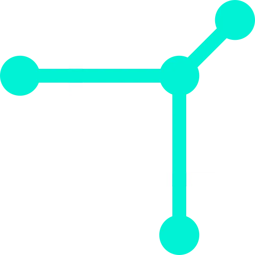

NetBox Report Dashboard
O Netbox Report Dashboard é uma aplicação web desenvolvida para facilitar a visualização, análise e gerenciamento das informações coletadas pelo Middleware Netbox.
A aplicação realiza a sincronização dos registros do sistema de controle de acesso com um banco de dados PostgreSQL, permitindo a geração de gráficos, estatísticas e relatórios interativos sobre acessos e eventos registrados pelos dispositivos monitorados.
O objetivo do projeto é transformar grandes volumes de dados técnicos em informações organizadas e de fácil interpretação, auxiliando equipes de operação, segurança e administração na tomada de decisões.
Principais funcionalidades:
- Sincronização automática dos dados do Netbox.
- Processamento de históricos de acessos e eventos.
- Importação de múltiplas partições do sistema.
- Armazenamento estruturado em PostgreSQL.
- Dashboard com gráficos interativos.
- Filtros por: Partição, Leitor, Período, Tipo de registro (Acessos/Eventos).
- Estatísticas em tempo real.
- Reprocessamento completo do banco de dados.
Como Usar
Para usar o NetBox Tools, siga os passos abaixo:
- Acesse a página de configurações clicando em "Configurações" no menu.
- Preencha os campos de configuração com as informações do seu servidor NetBox, incluindo endereço, porta, usuário, senha, partição e nome do banco de dados exibido no menu.
- Clique no botão "Testar conexão" para verificar se as configurações estão corretas e se a conexão com o servidor NetBox é bem-sucedida.
- Após testar a conexão, você pode acessar a página inicial para visualizar os dados extraídos e transformados do NetBox.